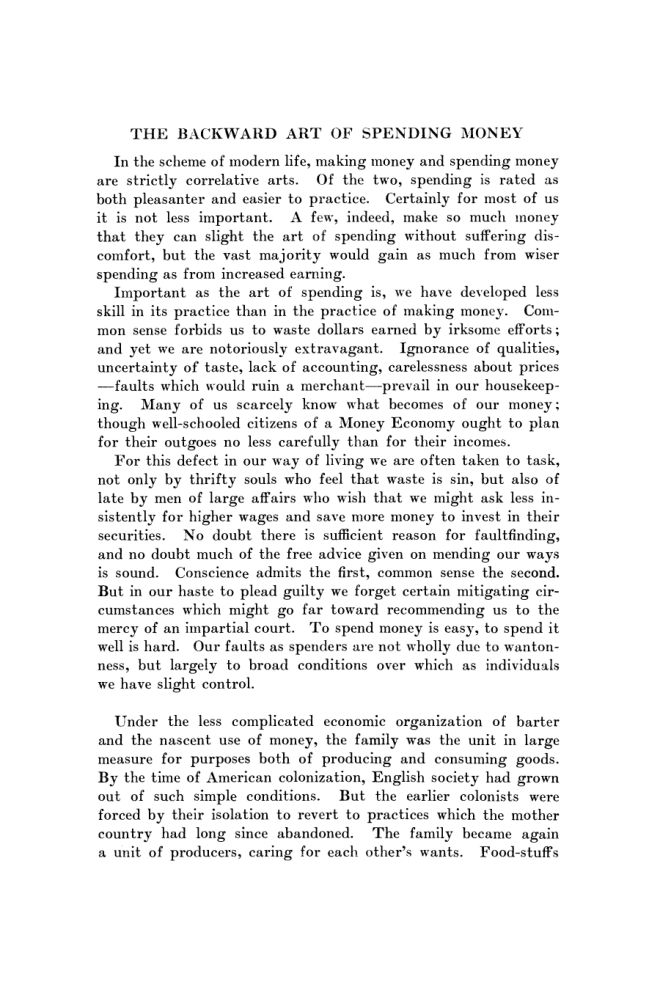

Mitchell, 1912: por que a arte de gastar ficou para trás?
Leitura: 7 min
A empresa ganhou escala, máquinas e contabilidade; a família, que gasta, ficou como nos tempos coloniais. Mitchell explica por que o consumo não acompanhou o progresso da produção.


Leite e sapatos, móveis e carne, revistas e combustível, chapéus e roupa de baixo, serviços médicos e brinquedos. A lista é de Wesley C. Mitchell, da University of California, e descreve o que uma só pessoa, a dona de casa, precisa comprar para uma família. Ninguém, observa, pode ter conhecimento especializado das qualidades e dos preços de mercadorias tão variadas.
O artigo parte de uma assimetria. Ganhar e gastar dinheiro são artes correlatas, e para a maioria das pessoas gastar melhor renderia tanto quanto ganhar mais. Mesmo assim, a sociedade desenvolveu muito mais habilidade na primeira. Ignorância de qualidades, gosto incerto, falta de contabilidade e descuido com preços, falhas que arruinariam um comerciante, prevalecem na administração doméstica.
“Gastar dinheiro é fácil; gastá-lo bem é difícil.” (“To spend money is easy, to spend it well is hard.”)
Mitchell recusa a explicação moral. As falhas do consumidor, sustenta, não se devem sobretudo a desleixo, mas a condições amplas sobre as quais o indivíduo tem pouco controle. O artigo enumera essas condições.
Por que a família não acompanhou a empresa?
A primeira condição é de organização. Os primeiros colonos, isolados, voltaram a fazer da família uma unidade de produção, e essa forma reapareceu por gerações na fronteira. A revolução industrial e a ferrovia mudaram isso: a fábrica passou a fazer, a ferrovia a trazer e a loja a vender o que a família antes produzia. A produção foi reorganizada na empresa, que reúne membros de muitas famílias e é muito mais eficiente, com especialização do trabalho e das máquinas e menos desperdício.
Como unidade de gasto, porém, a família ficou praticamente onde estava nos tempos coloniais. A razão, para Mitchell, é uma escolha: as pessoas valorizam a privacidade da vida familiar e aceitam pagar por ela, ainda que em cozinha ruim. Enquanto a família for a principal unidade de gasto, conclui, a arte de gastar ficará atrás da arte de ganhar.
Dessa escolha decorrem desvantagens econômicas precisas. Uma empresa que assumisse o consumo de muitas famílias teria departamentos de compras, com especialistas em carnes ou mantimentos, e tempo para testar qualidades e buscar preços. A família não pode ter essa divisão do trabalho, assim como a família de fronteira não podia tê-la na produção. Tampouco pode usar máquinas com proveito: tarefas pequenas, variadas e dispersas pela casa tornam a máquina mais incômoda que útil.
Mitchell aponta ainda dois traços da gestão doméstica. Os administradores de casas, ao contrário dos de empresas, raramente são escolhidos pela eficiência. E a tarefa vem acompanhada de uma rotina exaustiva de trabalho manual e de interrupções constantes, que deixa pouca energia para administrar. Nas empresas, quem decide é poupado do trabalho miúdo; na casa, a mesma pessoa cozinha, limpa, compra e administra. Há boas administradoras, reconhece o autor, mas a organização familiar impede que sua competência se estenda a outras casas, como o comerciante eficiente conquista os clientes do concorrente.
Que ciência e que contabilidade faltavam ao consumo?
A segunda condição é técnica. O progresso da produção apoiou-se na física e na química, ciências de objeto simples, uniforme e controlável em laboratório. O progresso do consumo depende da fisiologia e da psicologia funcional: saber o valor dos alimentos para o desenvolvimento do corpo, ou a ordem em que despertam os interesses da criança. Essas ciências estavam em condição rudimentar, e por isso o fabricante aprende mais com um químico industrial do que a dona de casa poderia aprender com todos os fisiologistas e psicólogos.
A terceira é contábil. O negócio é sistematizado por uma contabilidade em que todos os elementos se expressam no mesmo denominador, o dólar. Como os lucros também são medidos em dólares, o empresário pode comparar o crédito longo com a venda à vista, o carvão melhor com o desgaste das fornalhas, a publicidade com mais vendedores. A dona de casa pode comparar preços, mas não custos e ganhos, porque seus ganhos são o bem-estar físico e mental da família. Não há medida comum entre um tratamento dentário para o filho, um presente para o marido e dois dias de repouso.
A quarta é a definição dos fins. Ganhar dinheiro torna-se um fim em si; gastar envolve sempre um fim além do gasto. Antes de servir de guia prático, a felicidade e o desenvolvimento da família precisam ser traduzidos em termos concretos, e essa tradução é a mais difícil das tarefas.
Que papel tem a busca de distinção?
Há um fim que o gasto persegue, em geral sem consciência, e que contraria a economia: a distinção social. Mitchell lembra que Nassau Senior já apontara o papel do desejo de distinção na conduta e que Thorstein Veblen desenvolvera o tema em The Theory of the Leisure Class. Numa economia monetária, a renda é um critério tangível de valor, e o modo mais simples de mostrar posição é morar em casas maiores, vestir-se com mais estilo e ter mais lazer. O impulso, diz o autor, atravessa todas as classes e leva a família a comprar não só bens, mas consideração social.
Para Mitchell, o custo da consideração social “é um ar de desdém pelo custo”. (“The cost of the latter is an air of disregarding cost.”)
O que poderia melhorar a arte de gastar?
Se a análise estiver certa, conclui Mitchell, sermões sobre a ignorância e a extravagância domésticas são inúteis: não removem os limites da organização familiar, não ampliam a fisiologia e a psicologia, não criam denominador comum para custos e ganhos nem curam a busca de distinção. A melhora viria de mudanças lentas nas condições sociais.
Algumas já estavam em curso: o edifício de apartamentos com calefação e lavanderia comum, o hotel familiar, as cozinhas cooperativas, as leis de alimentos puros e a certificação municipal do leite, e os parques, bibliotecas e creches que as cidades ofereciam, um gasto socializado com o bairro, e não a família, como unidade. A outra frente é a difusão do conhecimento: revistas, clubes, a economia doméstica nas escolas e, talvez, uma classe profissional de doutores em ciência doméstica, a ser consultada como se consulta um médico.
Mesmo assim, o problema último permaneceria. A escolha do que vale a pena buscar não se resolve por organização, treinamento ou ciência. Nesse aspecto, escreve Mitchell, a arte de gastar se afasta da técnica dos negócios e se aproxima da filosofia e da ética.
Na minha leitura
Na minha leitura, o artigo é uma teoria institucional do consumo. Mitchell não trata o consumidor como alguém que maximiza dada uma lista de preferências; pergunta que organização, que conhecimento e que contabilidade estão disponíveis para quem decide o gasto, e mostra que a família tem muito menos de cada um que a empresa. A diferença de desempenho entre as duas artes sai dessa comparação, e não de uma diferença de caráter.
O ponto contábil é o mais fértil. Sem uma medida comum para os ganhos do consumo, não há como calcular o retorno de cada gasto, e a racionalidade que a teoria atribui ao consumidor fica sem o instrumento que a torna praticável na firma. A pergunta, como decidir bem sem um denominador comum, continua central na economia do bem-estar.
Glossário
- Economia monetária
- organização em que a produção e o consumo passam pela compra e venda com dinheiro.
- Unidade de gasto
- grupo que decide e executa o consumo; para Mitchell, em geral a família.
- Divisão do trabalho
- especialização de tarefas entre pessoas ou departamentos, que aumenta a eficiência.
- Denominador comum
- unidade em que custos e ganhos podem ser expressos e comparados, como o dólar na empresa.
- Consumo conspícuo
- gasto destinado a exibir posição social, tema de Thorstein Veblen.
- Gasto socializado
- consumo organizado por um grupo maior que a família, como o bairro ou a cidade.
Fontes
- The Backward Art of Spending Money — Wesley C. Mitchell (University of California) (pp. 269–281). JSTOR · Internet Archive (PDF)
- Edição completa, com os demais artigos: Nº 119 do Arquivo.
Documento em domínio público (EUA, publicado antes de 1931), via JSTOR Early Journal Content e Internet Archive. Resumo e comentário do autor deste site, sem afiliação com a American Economic Association. Encontrou um erro? Escreva: a correção é publicada no próprio texto, com data.
← Taussig, 1912: o que o custo de produção decide na tarifa da lã? ↑ Nº 119 · Junho de 1912: a tarifa da lã, a arte de gastar e a equação de trocas